第36 章介绍了I/O 设备的一般概念，并展示了操作系统如何与这种东西进行交互。在本章中，我们将更详细地介绍一种设备：磁盘驱动器（hard disk drive）。数十年来，这些驱动器一直是计算机系统中持久数据存储的主要形式，文件系统技术（即将探讨）的大部分发展都是基于它们的行为。因此，在构建管理它的文件系统软件之前，有必要先了解磁盘操作的细节。Ruemmler 和Wilkes [RW92]，以及Anderson、Dykes 和Riedel [ADR03]在他们的优秀论文中提供了许多这方面的细节。
关键问题：如何存储和访问磁盘上的数据
现代磁盘驱动器如何存储数据？接口是什么？数据是如何安排和访问的？磁盘调度如何提高性能？
37.1 接口¶
我们先来了解一个现代磁盘驱动器的接口。所有现代驱动器的基本接口都很简单。驱动器由大量扇区（512 字节块）组成，每个扇区都可以读取或写入。在具有n 个扇区的磁盘上，扇区从0 到n−1 编号。因此，我们可以将磁盘视为一组扇区，0 到n−1 是驱动器的地址空间（address space）。
多扇区操作是可能的。实际上，许多文件系统一次读取或写入4KB（或更多）。但是，在更新磁盘时，驱动器制造商唯一保证的是单个512 字节的写入是原子的（atomic，即它将完整地完成或者根本不会完成）。因此，如果发生不合时宜的掉电，则只能完成较大写入的一部分 [有时称为不完整写入（torn write）]。
大多数磁盘驱动器的客户端都会做出一些假设，但这些假设并未直接在接口中指定。Schlosser 和Ganger 称这是磁盘驱动器的“不成文的合同”[SG04]。具体来说，通常可以假设访问驱动器地址空间内两个彼此靠近的块将比访问两个相隔很远的块更快。人们通常也可以假设访问连续块（即顺序读取或写入）是最快的访问模式，并且通常比任何更随机的访问模式快得多。
37.2 基本几何形状¶
让我们开始了解现代磁盘的一些组件。我们从一个盘片（platter）开始，它是一个圆形坚硬的表面，通过引入磁性变化来永久存储数据。磁盘可能有一个或多个盘片。每个盘片有两面，每面都称为表面。这些盘片通常由一些硬质材料（如铝）制成，然后涂上薄薄的磁性层，即使驱动器断电，驱动器也能持久存储数据位。
所有盘片都围绕主轴（spindle）连接在一起，主轴连接到一个电机，以一个恒定（固定）的速度旋转盘片（当驱动器接通电源时）。旋转速率通常以每分钟转数（Rotations Per Minute，RPM）来测量，典型的现代数值在7200～15000 RPM 范围内。请注意，我们经常会对单次旋转的时间感兴趣，例如，以10000 RPM 旋转的驱动器意味着一次旋转需要大约6ms。
数据在扇区的同心圆中的每个表面上被编码。我们称这样的同心圆为一个磁道（track）。一个表面包含数以千计的磁道，紧密地排在一起，数百个磁道只有头发的宽度。
要从表面进行读写操作，我们需要一种机制，使我们能够感应（即读取）磁盘上的磁性图案，或者让它们发生变化（即写入）。读写过程由磁头（disk head）完成；驱动器的每个表面有一个这样的磁头。磁头连接到单个磁盘臂（disk arm）上，磁盘臂在表面上移动，将磁头定位在期望的磁道上。
37.3 简单的磁盘驱动器¶
让我们每次构建一个磁道的模型，来了解磁盘是如何工作的。假设我们有一个单一磁道的简单磁盘（见图37.1）。
该磁道只有12 个扇区，每个扇区的大小为512 字节（典型的扇区大小，回忆一下），因此用0 到11 的数字表示。这里的单个盘片围绕主轴旋转，电机连接到主轴。当然，磁道本身并不太有趣，我们希望能够读取或写入这些扇区，因此需要一个连接到磁盘臂上的磁头，如我们现在所见（见图37.2）。
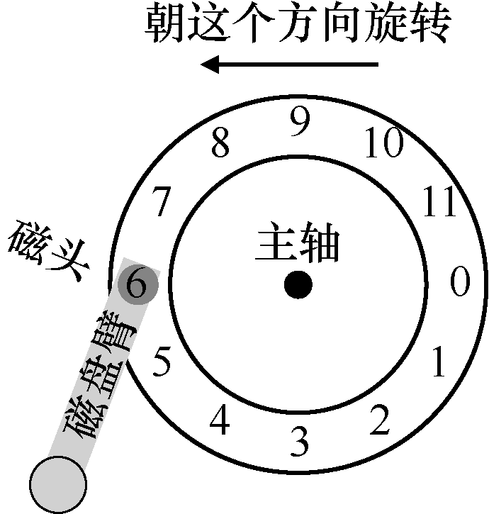
原书第 315 页图示 2
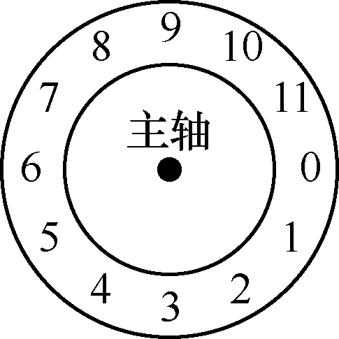
图37.1 只有单一磁道的磁盘图37.2 单磁道加磁头
在图37.2 中，连接到磁盘臂末端的磁头位于扇形部分6 的上方，磁盘表面逆时针旋转。
单磁道延迟：旋转延迟¶
要理解如何在简单的单道磁盘上处理请求，请想象我们现在收到读取块0 的请求。磁盘应如何处理该请求？
在我们的简单磁盘中，磁盘不必做太多工作。具体来说，它必须等待期望的扇区旋转到磁头下。这种等待在现代驱动器中经常发生，并且是I/O 服务时间的重要组成部分，它有一个特殊的名称：旋转延迟（rotational delay，有时称为rotation delay，尽管听起来很奇怪）。在这个例子中，如果完整的旋转延迟是R，那么磁盘必然产生大约为R/2 的旋转延迟，以等待0 来到读/写磁头下面（如果我们从6 开始）。对这个单一磁道，最坏情况的请求是第5 扇区，这导致接近完整的旋转延迟，才能服务这种请求。
多磁道：寻道时间¶
到目前为止，我们的磁盘只有一条磁道，这是不太现实的。现代磁盘当然有数以百万计的磁道。因此，我们来看看更具现实感的磁盘表面，这个表面有3 条磁道（见图37.3 左图）。
在该图中，磁头当前位于最内圈的磁道上（它包含扇区24～35）。下一个磁道包含下一组扇区（12～23），最外面的磁道包含最前面的扇区（0～11）。
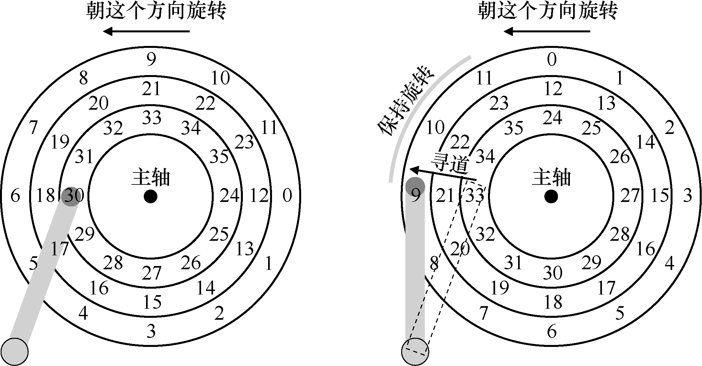
图37.3 3 条磁道加上一个磁头（右：带寻道）
为了理解驱动器如何访问给定的扇区，我们现在追踪请求发生在远处扇区的情况，例如，读取扇区11。为了服务这个读取请求，驱动器必须首先将磁盘臂移动到正确的磁道（在这种情况下，是最外面的磁道），通过一个所谓的寻道（seek）过程。寻道，以及旋转，是最昂贵的磁盘操作之一。
应该指出的是，寻道有许多阶段：首先是磁盘臂移动时的加速阶段。然后随着磁盘臂全速移动而惯性滑动。然后随着磁盘臂减速而减速。最后，在磁头小心地放置在正确的磁道上时停下来。停放时间（settling time）通常不小，例如0.5～2ms，因为驱动器必须确定找到正确的磁道（想象一下，如果它只是移到附近！）。
寻道之后，磁盘臂将磁头定位在正确的磁道上。图37.3（右图）描述了寻道。
如你所见，在寻道过程中，磁盘臂已经移动到所需的磁道上，并且盘片当然已经开始旋转，在这个例子中，大约旋转了3 个扇区。因此，扇区9 即将通过磁头下方，我们只能承受短暂的转动延迟，以便完成传输。
当扇区11 经过磁盘磁头时，I/O 的最后阶段将发生，称为传输（transfer），数据从表面读取或写入表面。因此，我们得到了完整的I/O 时间图：首先寻道，然后等待转动延迟，最后传输。
一些其他细节¶
尽管我们不会花费太多时间，但还有一些关于磁盘驱动器操作的令人感兴趣的细节。许多驱动器采用某种形式的磁道偏斜（track skew），以确保即使在跨越磁道边界时，顺序读取也可以方便地服务。在我们的简单示例磁盘中，这可能看起来如图37.4 所示。
扇区往往会偏斜，因为从一个磁道切换到另一个磁道
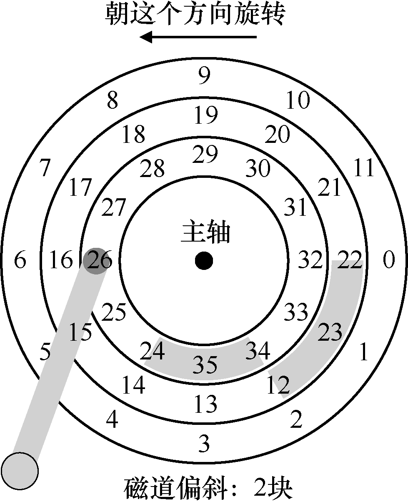
图37.4 3 条磁道：磁道偏斜为2
时，磁盘需要时间来重新定位磁头（即便移到相邻磁道）。如果没有这种偏斜，磁头将移动到下一个磁道，但所需的下一个块已经旋转到磁头下，因此驱动器将不得不等待整个旋转延迟，才能访问下一个块。
另一个事实是，外圈磁道通常比内圈磁道具有更多扇区，这是几何结构的结果。那里空间更多。这些磁道通常被称为多区域（multi-zoned）磁盘驱动器，其中磁盘被组织成多个区域，区域是表面上连续的一组磁道。每个区域每个磁道具有相同的扇区数量，并且外圈区域具有比内圈区域更多的扇区。
最后，任何现代磁盘驱动器都有一个重要组成部分，即它的缓存（cache），由于历史原因有时称为磁道缓冲区（track buffer）。该缓存只是少量的内存（通常大约8MB 或16MB），驱动器可以使用这些内存来保存从磁盘读取或写入磁盘的数据。例如，当从磁盘读取扇区时，驱动器可能决定读取该磁道上的所有扇区并将其缓存在其存储器中。这样做可以让驱动器快速响应所有后续对同一磁道的请求。
在写入时，驱动器面临一个选择：它应该在将数据放入其内存之后，还是写入实际写入磁盘之后，回报写入完成？前者被称为后写（write back）缓存（有时称为立即报告，immediate reporting），后者则称为直写（write through）。后写缓存有时会使驱动器看起来“更快”，但可能有危险。如果文件系统或应用程序要求将数据按特定顺序写入磁盘以保证正确性，后写缓存可能会导致问题（请阅读文件系统日志的章节以了解详细信息）。
补充：量纲分析
回忆一下在化学课上，你如何通过简单地选择单位，从而消掉这些单位，结果答案就跳出来了。这几乎能解决所有问题。这种化学魔法有一个高大上的名字，即量纲分析（dimensional analysis），事实证明，它在计算机系统分析中也很有用。
让我们举个例子，看看量纲分析是如何工作的，以及它为什么有用。在这个例子中，假设你必须计算磁盘旋转一周所需的时间（以 ms 为单位）。遗憾的是，你只能得到磁盘的 RPM，或每分钟的旋转次数（rotations per minute）。假设我们正在谈论一个 10K RPM 磁盘（每分钟旋转 10000 次）。如何通过量纲分析，得到以毫秒为单位的每转时间？
要做到这一点，我们先将所需单位置于左侧。在这个例子中，我们希望获得每次旋转所需的时间（以毫秒为单位），所以我们就写下：时间（ms）/1次旋转。然后写下我们所知道的一切，确保在可能的情况下消掉单位。首先，我们得到 1min/10000次旋转（将旋转保持在分母，因为左侧它也在分母），然后用 60s/1min 将分钟转换成秒，然后用 1000ms/1s 将秒转换成毫秒。最终结果如下（单位很好地消掉了）：
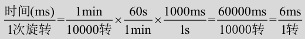
量纲分析：每次旋转所需时间
从这个例子中可以看出，量纲分析使得一个简单而可重复的过程变得很明显。除了上面的RPM 计算之外，它也经常用于I/O 分析。例如，经常会给你磁盘的传输速率，例如100MB/s，然后问：传输512KB数据块需要多长时间（以ms 为单位）？利用量纲分析，这很容易：
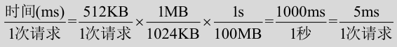
量纲分析：每次传输请求所需时间
从这个例子中可以看出，量纲分析使得一个简单而可重复的过程变得很明显。除了上面的RPM 计算之外，它也经常用于I/O 分析。例如，经常会给你磁盘的传输速率，例如100MB/s，然后问：传输512KB数据块需要多长时间（以ms 为单位）？利用量纲分析，这很容易。
37.4 I/O 时间：用数学¶
既然我们有了一个抽象的磁盘模型，就可以通过一些分析来更好地理解磁盘性能。具体来说，现在可以将I/O 时间表示为3 个主要部分之和：
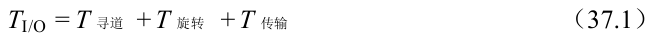
公式 37.1：I/O 时间
请注意，通常比较驱动器用I/O 速率（RI/O）更容易（如下所示），它很容易从时间计算出来。只要将传输的大小除以所花的时间：
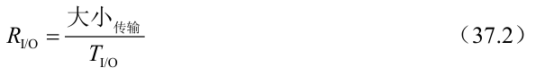
公式 37.2：I/O 速率
为了更好地感受I/O 时间，我们执行以下计算。假设有两个我们感兴趣的工作负载。第一个工作负载称为随机（random）工作负载，它向磁盘上的随机位置发出小的（例如4KB）读取请求。随机工作负载在许多重要的应用程序中很常见，包括数据库管理系统。第二种称为顺序（sequential）工作负载，只是从磁盘连续读取大量的扇区，不会跳过。顺序访问模式很常见，因此也很重要。
为了理解随机和顺序工作负载之间的性能差异，我们首先需要对磁盘驱动器做一些假设。我们来看看希捷的几个现代磁盘。第一个名为Cheetah 15K.5 [S09b]，是高性能SCSI驱动器。第二个名为Barracuda [S09a]，是一个为容量而生的驱动器。有关两者的详细信息如表37.1 所示。
如你所见，这些驱动器具有完全不同的特性，并且从很多方面很好地总结了磁盘驱动器市场的两个重要部分。首先是“高性能”驱动器市场，驱动器的设计尽可能快，提供低寻道时间，并快速传输数据。其次是“容量”市场，每字节成本是最重要的方面。因此，驱动器速度较慢，但将尽可能多的数据放到可用空间中。
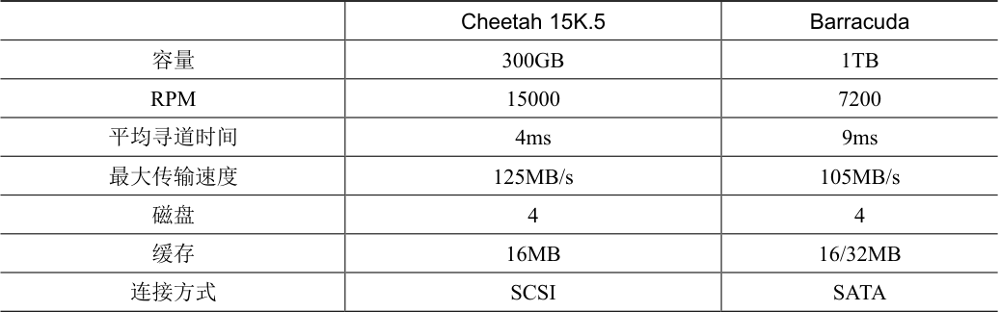
表37.1 磁盘驱动器规格：SCSI 与SATA
表格文字
| Cheetah 15K.5 | Barracuda | |
|---|---|---|
| 容量 | 300GB | 1TB |
| RPM | 15000 | 7200 |
| 平均寻道时间 | 4ms | 9ms |
| 最大传输速度 | 125MB/s | 105MB/s |
| 磁盘 | 4 | 4 |
| 缓存 | 16MB | 16/32MB |
| 连接方式 | SCSI | SATA |
根据这些数据，我们可以开始计算驱动器在上述两个工作负载下的性能。我们先看看随机工作负载。假设每次读取4KB 发生在磁盘的随机位置，我们可以计算每次读取需要多长时间。在Cheetah 上：
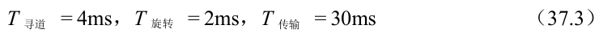
原书第 319 页公式 1
提示：顺序地使用磁盘
尽可能以顺序方式将数据传输到磁盘，并从磁盘传输数据。如果顺序不可行，至少应考虑以大块传输数据：越大越好。如果I/O 是以小而随机方式完成的，则I/O 性能将受到显著影响。而且，用户也会痛苦。而且，你也会痛苦，因为你知道正是你不小心的随机I/O 让你痛苦。
平均寻道时间（4ms）就采用制造商报告的平均时间。请注意，完全寻道（从表面的一端到另一端）可能需要两到三倍的时间。平均旋转延迟直接根据RPM 计算。15000 RPM 等于250 RPS（每秒转速）。因此，每次旋转需要4ms。平均而言，磁盘将会遇到半圈旋转，因此平均时间为2ms。最后，传输时间就是传输大小除以峰值传输速率。在这里它小得几乎看不见（30μs，注意，需要1000μs 才是1ms！）。
因此，根据我们上面的公式，Cheetah 的TI/O 大致等于6ms。为了计算I/O 的速率，我们只需将传输的大小除以平均时间，因此得到Cheetah 在随机工作负载下的RI/O 大约是0.66MB/s。对Barracuda 进行同样的计算，得到TI/O 约为13.2ms，慢两倍多，因此速率约为0.31MB/s。
现在让我们看看顺序工作负载。在这里我们可以假定在一次很长的传输之前只有一次寻道和旋转。简单起见，假设传输的大小为100MB。因此，Barracuda 和Cheetah 的TI/O 分别约为800ms 和950ms。因此I/O 的速率几乎接近125MB/s 和105MB/s 的峰值传输速率，如表37.2 所示。
表37.2 展示了一些重要的事情。第一点，也是最重要的一点，随机和顺序工作负载之间的驱动性能差距很大，对于Cheetah 来说几乎是200 左右，而对于Barracuda 来说差不多是300 倍。因此我们得出了计算历史上最明显的设计提示。
第二点更微妙：高端“性能”驱动器与低端“容量”驱动器之间的性能差异很大。出于这个原因（和其他原因），人们往往愿意为前者支付最高的价格，同时尽可能便宜地获得后者。
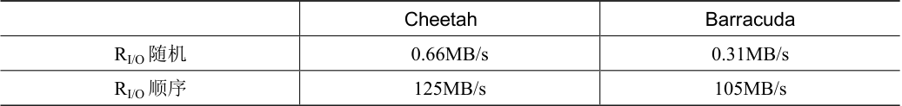
表37.2 磁盘驱动器性能：SCSI 与SATA
表格文字
| Cheetah | Barracuda | |
|---|---|---|
| RI/O 随机 | 0.66MB/s | 0.31MB/s |
| RI/O 顺序 | 125MB/s | 105MB/s |
补充：计算“平均”寻道时间
在许多书籍和论文中，引用的平均磁盘寻道时间大约为完整寻道时间的三分之一。这是怎么来的？
原来，它是基于平均寻道距离而不是时间的简单计算而产生的。将磁盘想象成一组从0 到N 的磁道。因此任何两个磁道x 和y 之间的寻道距离计算为它们之间差值的绝对值：| x − y |。
要计算平均搜索距离，只需首先将所有可能的搜索距离相加即可：
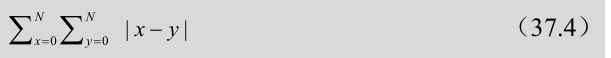
公式 37.4：寻道距离求和
然后，将其除以不同可能的搜索次数：N2。为了计算总和，我们将使用积分形式：
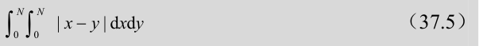
公式 37.5：双重积分
为了计算内层积分，我们分离绝对值：
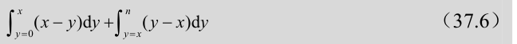
公式 37.6：分离绝对值
内层积分求解与化简
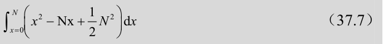
公式 37.7：外层积分
这得到：
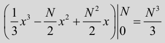
外层积分结果
记住，我们仍然必须除以寻道总数（N2）来计算平均寻道距离：（N3/3）/（N2）= N/3。因此，在所有可能的寻道中，磁盘上的平均寻道距离是全部距离的1/3。现在，如果听到平均寻道时间是完整寻道时间的1/3，你就会知道是怎么来的。
37.5 磁盘调度¶
由于I/O 的高成本，操作系统在决定发送给磁盘的I/O 顺序方面历来发挥作用。更具体地说，给定一组I/O 请求，磁盘调度程序检查请求并决定下一个要调度的请求[SCO90，JW91]。
与任务调度不同，每个任务的长度通常是不知道的，对于磁盘调度，我们可以很好地猜测“任务”（即磁盘请求）需要多长时间。通过估计请求的查找和可能的旋转延迟，磁盘调度程序可以知道每个请求将花费多长时间，因此（贪婪地）选择先服务花费最少时间的请求。因此，磁盘调度程序将尝试在其操作中遵循SJF（最短任务优先）的原则（principle of SJF，shortest job first）。
SSTF：最短寻道时间优先¶
一种早期的磁盘调度方法被称为最短寻道时间优先
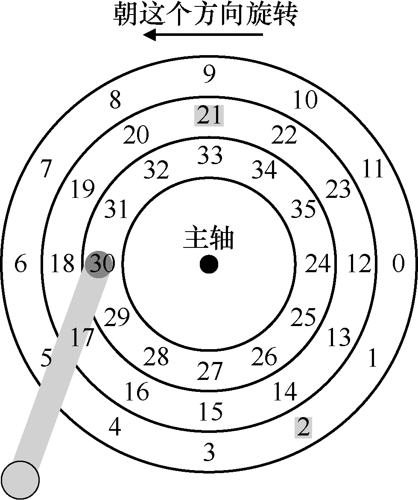
图37.5 SSTF：调度请求21 和2
（Shortest-Seek-Time-First，SSTF）（也称为最短寻道优先，Shortest-Seek-First，SSF）。SSTF 按磁道对I/O 请求队列排序，选择在最近磁道上的请求先完成。例如，假设磁头当前位置在内圈磁道上，并且我们请求扇区21（中间磁道）和2（外圈磁道），那么我们会首先发出对21 的请求，等待它完成，然后发出对2 的请求（见图37.5）。
在这个例子中，SSTF 运作良好，首先寻找中间磁道，然后寻找外圈磁道。但SSTF 不是万能的，原因如下。第一个问题，主机操作系统无法利用驱动器的几何结构，而是只会看到一系列的块。幸运的是，这个问题很容易解决。操作系统可以简单地实现最近块优先（Nearest-Block-First，NBF），而不是SSTF，然后用最近的块地址来调度请求。
第二个问题更为根本：饥饿（starvation）。想象一下，在我们上面的例子中，是否有对磁头当前所在位置的内圈磁道有稳定的请求。然后，纯粹的SSTF 方法将完全忽略对其他磁道的请求。因此关键问题如下。
关键问题：如何处理磁盘饥饿
我们如何实现类SSTF 调度，但避免饥饿？
电梯（又称SCAN 或C-SCAN）¶
这个问题的答案是很久以前得到的（参见[CKR72]中的例子），并且相对比较简单。该算法最初称为SCAN，简单地以跨越磁道的顺序来服务磁盘请求。我们将一次跨越磁盘称为扫一遍。因此，如果请求的块所属的磁道在这次扫一遍中已经服务过了，它就不会立即处理，而是排队等待下次扫一遍。
SCAN 有许多变种，所有这些变种都是一样的。例如，Coffman 等人引入了F-SCAN，它在扫一遍时冻结队列以进行维护[CKR72]。这个操作会将扫一遍期间进入的请求放入队列中，以便稍后处理。这样做可以避免远距离请求饥饿，延迟了迟到（但更近）请求的服务。
C-SCAN 是另一种常见的变体，即循环SCAN（Circular SCAN）的缩写。不是在一个方向扫过磁盘，该算法从外圈扫到内圈，然后从内圈扫到外圈，如此下去。
由于现在应该很明显的原因，这种算法（及其变种）有时被称为电梯（elevator）算法，因为它的行为像电梯，电梯要么向上要么向下，而不只根据哪层楼更近来服务请求。试想一下，如果你从10 楼下降到1 楼，有人在3 楼上来并按下4 楼，那么电梯就会上升到4 楼，因为它比1 楼更近！如你所见，电梯算法在现实生活中使用时，可以防止电梯中发生战斗。在磁盘中，它就防止了饥饿。
然而，SCAN 及其变种并不是最好的调度技术。特别是，SCAN（甚至SSTF）实际上并没有严格遵守SJF 的原则。具体来说，它们忽视了旋转。因此，另一个关键问题如下。
关键问题：如何计算磁盘旋转开销
如何同时考虑寻道和旋转，实现更接近SJF 的算法？
SPTF：最短定位时间优先¶
在讨论最短定位时间优先调度之前（Shortest Positioning Time First，SPTF，有时也称为最短接入时间优先，Shortest Access Time First，SATF。这是
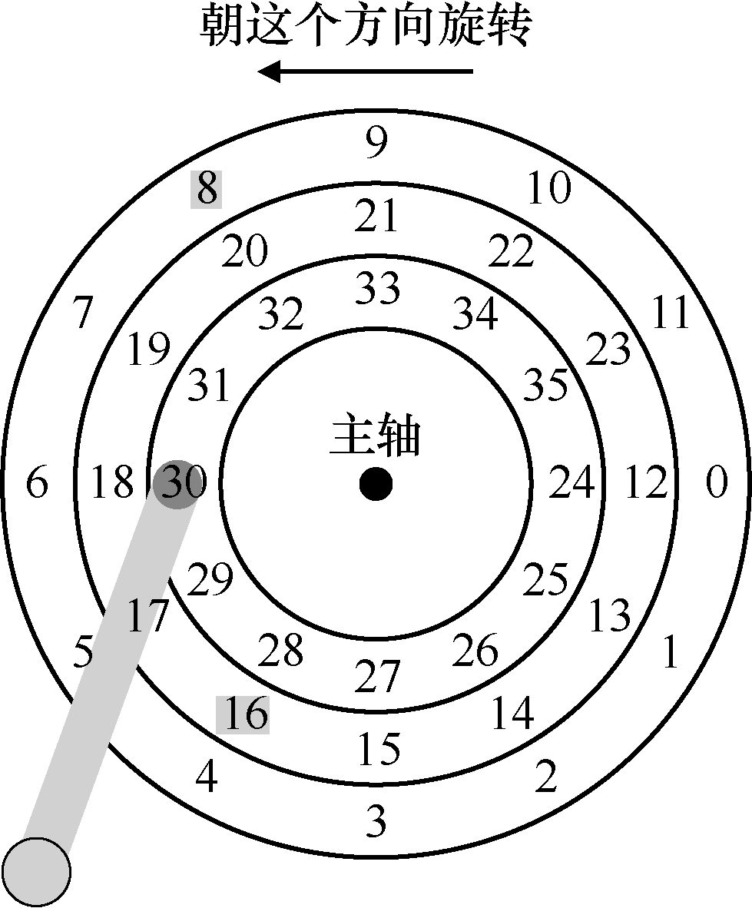
图37.6 SSTF：有时候不够好
解决我们问题的方法），让我们确保更详细地了解问题。图 37.6 给出了一个例子。
在这个例子中，磁头当前定位在内圈磁道上的扇区30上方。因此，调度程序必须决定：下一个请求应该为安排扇区16（在中间磁道上）还是扇区8（在外圈磁道上）。接下来应该服务哪个请求？
答案当然是“视情况而定”。在工程中，事实证明“视情况而定”几乎总是答案，这反映了取舍是工程师生活的一部分。这样的格言也很好，例如，当你不知道老板问题的答案时，也许可以试试这句好话。然而，知道为什么视情况而定总是更好，我们在这里讨论要讨论这一点。
这里的情况是旋转与寻道相比的相对时间。如果在我们的例子中，寻道时间远远高于旋转延迟，那么SSTF（和变体）就好了。但是，想象一下，如果寻道比旋转快得多。然后，在我们的例子中，寻道远一点的、在外圈磁道的服务请求8，比寻道近一点的、在中间磁道的服务请求16 更好，后者必须旋转很长的距离才能移到磁头下。
在现代驱动器中，正如上面所看到的，查找和旋转大致相当（当然，视具体的请求而定），因此SPTF 是有用的，它提高了性能。然而，它在操作系统中实现起来更加困难，操作系统通常不太清楚磁道边界在哪，也不知道磁头当前的位置（旋转到了哪里）。因此，SPTF通常在驱动器内部执行，如下所述。
提示：总是视情况而定（LIVNY 定律）
正如我们的同事Miron Livny 总是说的那样，几乎任何问题都可以用“视情况而定”来回答。但是，要谨慎使用，因为如果你以这种方式回答太多问题，人们就不会再问你问题。例如，有人问：“想去吃午饭吗？”你回答：“视情况而定。你是一个人来吗？”
其他调度问题¶
在这个基本磁盘操作，调度和相关主题的简要描述中，还有很多问题我们没有讨论。其中一个问题是：在现代系统上执行磁盘调度的地方在哪里？在较早的系统中，操作系统完成了所有的调度。在查看一系列挂起的请求之后，操作系统会选择最好的一个，并将其发送到磁盘。当该请求完成时，将选择下一个，如此下去。磁盘当年比较简单，生活也是。
在现代系统中，磁盘可以接受多个分离的请求，它们本身具有复杂的内部调度程序（它们可以准确地实现SPTF。在磁盘控制器内部，所有相关细节都可以得到，包括精确的磁头位置）。因此，操作系统调度程序通常会选择它认为最好的几个请求（如16），并将它们全部发送到磁盘。磁盘然后利用其磁头位置和详细的磁道布局信息等内部知识，以最佳可能（SPTF）顺序服务于这些请求。
磁盘调度程序执行的另一个重要相关任务是I/O 合并（I/O merging）。例如，设想一系列请求读取块33，然后是8，然后是34，如图37.8 所示。在这种情况下，调度程序应该将块33 和34 的请求合并（merge）为单个两块请求。调度程序执行的所有请求都基于合并后的请求。合并在操作系统级别尤其重要，因为它减少了发送到磁盘的请求数量，从而降低了开销。
现代调度程序关注的最后一个问题是：在向磁盘发出I/O 之前，系统应该等待多久？有人可能天真地认为，即使有一个磁盘I/O，也应立即向驱动器发出请求。这种方法被称为工作保全（work-conserving），因为如果有请求要服务，磁盘将永远不会闲下来。然而，对预期磁盘调度的研究表明，有时最好等待一段时间[ID01] ，即所谓的非工作保全（non-work-conserving）方法。通过等待，新的和“更好”的请求可能会到达磁盘，从而整体效率提高。当然，决定何时等待以及多久可能会非常棘手。请参阅研究论文以了解详细信息，或查看Linux 内核实现，以了解这些想法如何转化为实践（如果你对自己要求很高）。
37.6 小结¶
我们已经展示了磁盘如何工作的概述。概述实际上是一个详细的功能模型。它没有描述实际驱动器设计涉及的惊人的物理、电子和材料科学。对于那些对更多这类细节感兴趣的人，我们建议换一个主修专业（或辅修专业）。对于那些对这个模型感到满意的人，很好！我们现在可以继续使用该模型，在这些令人难以置信的设备之上构建更多有趣的系统。
参考资料¶
[ADR03]“More Than an Interface: SCSI vs. ATA”Dave Anderson, Jim Dykes, Erik Riedel FAST ’03, 2003关于现代磁盘驱动器真正如何工作的最新的参考文献之一。有兴趣了解更多信息的人必读。
[CKR72]“Analysis of Scanning Policies for Reducing Disk Seek Times”E.G. Coffman, L.A. Klimko, B. Ryan SIAM Journal of Computing, September 1972, Vol 1. No 3.磁盘调度领域的一些早期工作。
[ID01]“Anticipatory Scheduling: A Disk-scheduling Framework To Overcome Deceptive Idleness In Synchronous I/O”Sitaram Iyer, Peter Druschel SOSP ’01, October 2001一篇很酷的论文，展示了等待如何可以改善磁盘调度——更好的请求可能正在路上！
[JW91]“Disk Scheduling Algorithms Based On Rotational Position”D. Jacobson, J. Wilkes Technical Report HPL-CSP-91-7rev1, Hewlett-Packard (February 1991)更现代的磁盘调度技术。它仍然是一份技术报告（而不是发表的论文），因为该文被Seltzer 等人的 [SCO90]抢先收录。
[RW92]“An Introduction to Disk Drive Modeling”C．Ruemmler, J. Wilkes IEEE Computer, 27:3, pp. 17-28, March 1994磁盘操作的基础知识的很好介绍。有些部分已经过时，但大部分基础知识仍然有用。
[SCO90]“Disk Scheduling Revisited”Margo Seltzer, Peter Chen, John Ousterhout USENIX 1990一篇论述磁盘调度世界中旋转问题的文章。
[SG04]“MEMS-based storage devices and standard disk interfaces: A square peg in a round hole?”Steven W. Schlosser, Gregory R. Ganger FAST ’04, pp. 87-100, 2004尽管本文的MEMS 方面尚未产生影响，但文件系统和磁盘之间的契约讨论是美妙而持久的贡献。
[S09a]“Barracuda ES.2 data sheet”数据表，阅读风险自负。
[S09b]“Cheetah 15K.5”
作业¶
本作业使用disk.py 来帮助读者熟悉现代磁盘的工作原理。它有很多不同的选项，与大多数其他模拟不同，它有图形动画，可以准确显示磁盘运行时发生的情况。详情请参阅README 文件。
问题¶
1．计算以下几组请求的寻道、旋转和传输时间：-a 0，-a 6，-a 30，-a 7，30，8，最后-a 10，11，12，13。
2．执行上述相同请求，但将寻道速率更改为不同值：-S 2，-S 4，-S 8，-S 10，-S 40，-S 0.1。时代如何变化？
3．同样的请求，但改变旋转速率：-R 0.1，-R 0.5，-R 0.01。时间如何变化？
4．你可能已经注意到，对于一些请求流，一些策略比FIFO 更好。例如，对于请求流-a 7，30，8，处理请求的顺序是什么？现在在相同的工作负载上运行最短寻道时间优先（SSTF）调度程序（-p SSTF）。每个请求服务需要多长时间（寻道、旋转、传输）？
5．现在做同样的事情，但使用最短的访问时间优先（SATF）调度程序（-p SATF）。它是否对-a 7，30.8 指定的一组请求有所不同？找到SATF 明显优于SSTF 的一组请求。出现显著差异的条件是什么？
6．你可能已经注意到，该磁盘没有特别好地处理请求流-a 10，11，12，13。这是为什么？你可以引入一个磁道偏斜来解决这个问题（-o skew，其中skew 是一个非负整数）？考虑到默认寻道速率，偏斜应该是多少，才能尽量减少这一组请求的总时间？对于不同的寻道速率（例如，-S 2，-S 4）呢？一般来说，考虑到寻道速率和扇区布局信息，你能否写出一个公式来计算偏斜？
7．多区域磁盘将更多扇区放到外圈磁道中。以这种方式配置此磁盘，请使用-z 标志运行。具体来说，尝试运行一些请求，针对使用-z 10，20，30 的磁盘（这些数字指定了扇区在每个磁道中占用的角度空间。在这个例子中，外圈磁道每隔10 度放入一个扇区，中间磁道每20 度，内圈磁道每30 度一个扇区）。运行一些随机请求（例如，-a -1 -A 5，-1，0，它通过-a -1 标志指定使用随机请求，并且生成从0 到最大值的五个请求），看看你是否可以计算寻道、旋转和传输时间。使用不同的随机种子（-s 1，-s 2 等）。外圈，中间和内圈磁道的带宽（每单位时间的扇区数）是多少？
8．调度窗口确定一次磁盘可以接受多少个扇区请求，以确定下一个要服务的扇区。生成大量请求的某种随机工作负载（例如，-A 1000，-1，0，可能用不同的种子），并查看调度窗口从1 变为请求数量时，SATF 调度器需要多长时间（即-w 1 至-w 1000，以及其间的一些值）。需要多大的调度窗口才能达到最佳性能？制作一张图并看看。提示：使用-c 标志，不要使用-G 打开图形，以便更快运行。当调度窗口设置为1 时，你使用的是哪种策略？
9．在调度程序中避免饥饿非常重要。对于SATF 这样的策略，你能否想到一系列的请求，导致特定扇区的访问被推迟了很长时间？给定序列，如果使用有界的SATF（bounded SATF ，BSATF）调度方法，它将如何执行？在这种方法中，你可以指定调度窗口（例如-w 4）以及BSATF 策略（-p BSATF）。这样，调度程序只在当前窗口中的所有请求都被服务后，才移动到下一个请求窗口。这是否解决了饥饿问题？与SATF 相比，它的表现如何？一般来说，磁盘如何在性能与避免饥饿之间进行权衡？
10．到目前为止，我们看到的所有调度策略都很贪婪（greedy），因为它们只是选择下一个最佳选项，而不是在一组请求中寻找最优调度。你能找到一组请求，导致这种贪婪方法不是最优吗？